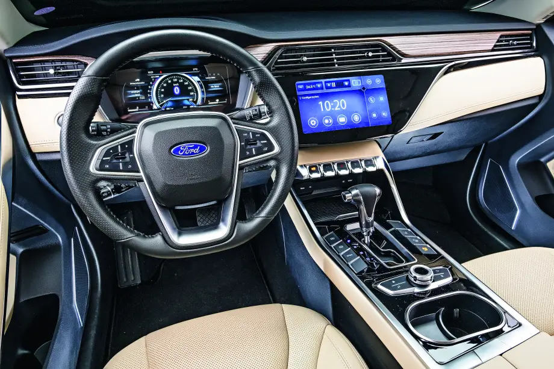
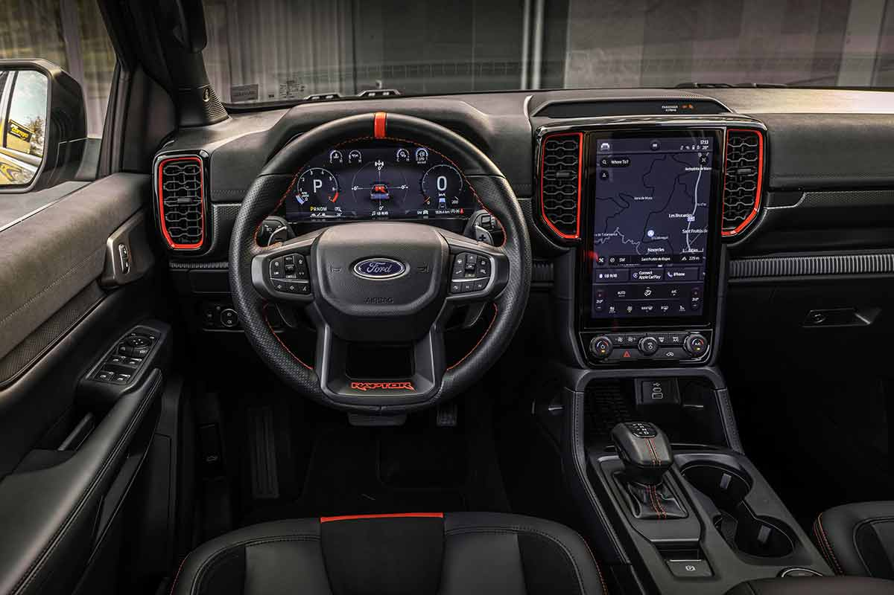
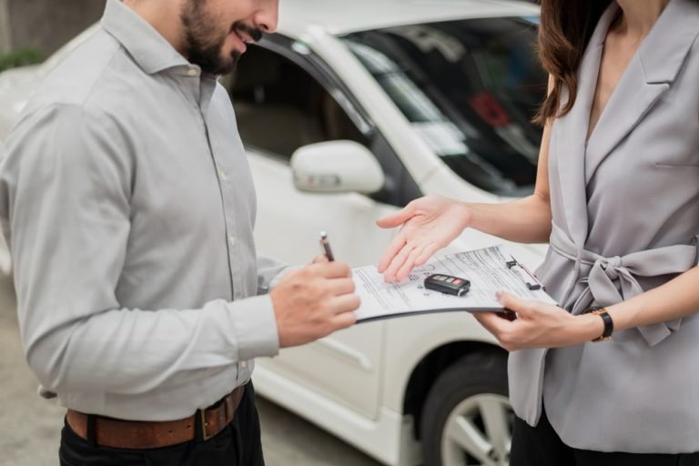

Os Principais Recursos de segurança

Espaço Interno
Ao pensar no alugamento de um carro, precisamos lembrar que envolve muitas coisas. Para começar,
você deve saber como pretende usar o veículo e o espaço que ele deve ter para atender suas expectativas.
Veículos que serão usados por uma única pessoa podem ser subcompactos ou compactos. Já os modelos para a família, que receberão cadeirinha
de bebê, ou aqueles que serão usados por motoristas de aplicativo devem ser sedans ou sedans premium, por exemplo.

Economia
Um carro novo pode ser econômico tanto no consumo
de combustível quanto na manutenção e troca de
peças. Seguramente, este é um dos pontos mais
avaliados pelos brasileiros que querem alugar um carro.
Por isso, veja quantos Kms o carro alugado ou próprio
roda por litro de combustível e saiba qual é o custo
médio de manutenção do modelo.
Tamanho do Carro
Fatores como tamanho do carro e potência do motor também devem ser analisados na hora da compra. Além do espaço interno,
avalie a altura do carro em relação ao solo, para melhor visibilidade; o tamanho do modelo. Lembrando que os carros subcompactos
e compactos são mais fáceis de manobrar e estacionar, sendo indicados para quem transita bastante em perímetro urbano. Outro
de bebê, compras de supermercado e outros volumes.
Segurança
É muito importante que o carro novo tenha recursos de segurança avançados,
como airbags múltiplos, controle de estabilidade, freios ABS e sensores anticolisão.
Além de serem úteis no dia a dia, esses itens valorizam o carro na hora da revenda.
.jpg)
Preço do seguro
Quanto mais caro e visado o carro, maior será o preço do seguro. Com certeza,
este é um dos fatores decisivos na hora de comprar um veículo. A dica é fazer uma pesquisa prévia sobre o preço do seguro dos modelos
de seu interesse e colocar o custo na ponta do lápis.
Tenha cuidado com o documento do carro
Assim como em um carro próprio, é preciso ter muito cuidado com os documentos do veículo. Mas no caso do carro alugado,
como ele fica em nome da empresa, o cuidado deve ser ainda maior. Por isso, é importante evitar deixar o documento dentro do carro.
Muitos contratos preveem que se o carro for roubado com o documento dentro, o locatário fica responsável pelo veículo.
Dessa forma, teria que arcar com todo o prejuízo do roubo do carro sozinho. E se isso estiver estabelecido em contrato,
o consumidor só poderá questionar essa decisão na justiça. Isso porque se o carro for furtado e parado pela polícia,
ele poderá ser liberado como se o ladrão fosse apenas um locatário. No entanto, se ele não tiver esse documento em mãos,
levantará suspeitas, o que facilita para recuperar o veículo.
Coberturas de um seguro para aluguel de carros
As coberturas de proteção de um veículo alugado variam de locadora para locadora. Independentemente da empresa, porém,
a seguradora não cobre prejuízos provocados pela má conduta do motorista, ou seja, caso o indivíduo infrinja as leis de trânsito,
terá que quitar do próprio bolso todo o dano provocado. Normalmente, o carro alugado é protegido contra danos na lataria, colisões, roubos e furtos,
para a cobertura de acidentes pessoais e danos a terceiros, porém, costuma ser necessário contratar cobertura adicional, opcional ao consumidor.
O seguro para acidentes pessoais é aquele que cobre despesas médicas do usuário após um acidente.

Já o de danos a terceiros ressarce o prejuízo de indivíduos envolvidos em um sinistro com o carro segurado, como uma batida, algumas empresas locatárias ainda oferecem
alternativa de seguro com isenção da coparticipação obrigatória. A coparticipação funciona como a franquia de um seguro comum e, quando isenta,
não cobra valores do usuário em caso de sinistro. Logo, nesses casos, tudo que explicamos sobre a franquia de seguro no tópico anterior deixa de valer,
também costuma ser possível contratar assistência 24 horas para ao automóvel. Assim como proteção para vidros e pneus.
As alternativas variam por locadora, e são sugeridas logo na assinatura do contrato, todas as regras do seguro contratado também ficam listadas no contrato da
locação de veículo. Sobre a franquia, as coberturas, modo de registrar um sinistro e mais, é essencial ter atenção às cláusulas do documento ao alugar carro.
Assim, após qualquer problema, você saberá como agir e com quais assistências contar.
É muito importante que o carro novo tenha recursos de
segurança avançados, como airbags múltiplos, controle
de estabilidade, freios ABS e sensores anticolisão. Além
de serem úteis no dia a dia, esses itens valorizam o carro
na hora da revenda.
Tecnologia
Hoje, o mercado automotivo oferece vários modelos tecnológicos, com recursos de entretenimento e conectividade.
Para algumas pessoas, este é um fator decisivo na hora de escolher um carro por assinatura ou para comprar.
Modelos com central multimídia, funções automatizadas, equipamentos de entretenimento para quem viaja no banco de trás e
outros componentes tecnológicos estão entre os mais valorizados.
.jpg)
A cada lançamento, mais tecnologias. Às vezes com nomes diferentes, os dispositivos basicamente executam as mesmas funções, como airbags laterais e de cortina,
câmeras traseiras para manobras, controle automático de descida, assistente de permanência de faixa e controle de estabilidade.
Muitas tecnologias se valem de câmeras que fornecem imagens coloridas 3D, sensores, radares e interferem em vários sistemas do veículo,
como freio, piloto automático e acelerador, minimizando riscos de colisão e acidentes.
Os carros têm sido fabricados com cada vez mais recursos tecnológicos. E eles não visam apenas o aumento de desempenho ou economia de combustível.
Tecnologias automotivas têm sido criadas como soluções para melhorar a segurança do motorista e do trânsito em geral.